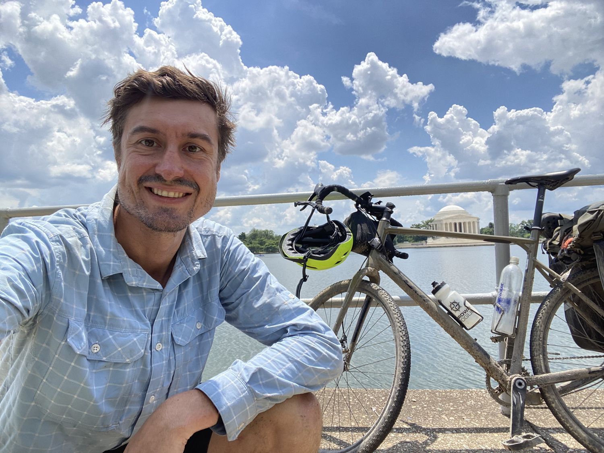

About Me
The longer story: how a political science major ended up working on self-driving trucks, and then AI
Home base — Dallas, TXBefore that — Portland, Pittsburgh, SeattleCo-pilot — Charlie Brown, a very good dogUsually found — on a bike or a trailThe home page covers what I do now. This page is the rest: how I got here, what I’ve built along the way, and what I do when the laptop is closed.
The thread running through it is that I’ve spent 10+ years owning the kind of programs nobody has a playbook for, in rooms that run from delivery teams up to the C-suite and board. I’ve worked across government, startups, venture capital and global enterprises, so I get to pull from a lot of different perspectives when I dig into a hard problem.
How I got here
-
2013–14
Coro Fellow in Public Affairs Pittsburgh
Where it started: a cross-sector leadership fellowship in public affairs.
-
2014–15
Co-founder Small Change
Co-founded a real estate impact investing platform and built its triple-bottom-line metrics framework.
-
2015
Researcher Birchmere Ventures
Did research for Sean Ammirati’s The Science of Growth.
-
2016–18
Inspire Leadership Lab Daimler Truck
The executive development program: rotations across four business units, and presenting to the CEO and board. Also won an internal innovation competition with a computer vision pitch for assessing infrastructure.
-
2018–19
Senior Data Analyst Daimler Truck
Led Daimler Truck North America’s first predictive analytics initiative, forecasting vehicle malfunctions.
-
2019–21
Senior Program Lead, Autonomous Technology Daimler Truck
Ran cross-team program delivery for the autonomous trucking R&D effort, scaling the engineering organization from 12 to 70+ engineers and training 100+ people in new ways of working.
-
2021–25
Manager, Agile Program Management Publicis Sapient
Owned delivery of a large B2B commerce platform transformation and redesigned how engineering and UX worked together, cutting redesign cycles by 70%.
-
2025–now
Engagement Lead Publicis Sapient
The job on the home page. The Copilot rollout came with a 20% productivity improvement, and I designed the sales order automation program end to end, from the business case through delivery governance.
What I build
Besides the recipe optimizer, a few things I’ve shipped:
- A PowerPoint generation agent that enforces a full design system, with far better output than off-the-shelf tools.
- Shared, LLM-queryable research vaults that took customer research synthesis from days to hours.
- JSON knowledge graphs of code repositories that give coding agents better context on complex changes.
- AI-assisted KPI reporting and forecasting dashboards for budget analysis and executive decisions.
Credentials
MS in Information Systems Management and MS in Public Policy and Management from Carnegie Mellon’s Heinz College, and a BA in Political Science from Seattle University. PMP, SAFe 6 Program Consultant (SPC), Prosci Certified Change Practitioner and Certified ScrumMaster.
Off the clock
Long rides and bikepacking trips, marathon training, cooking, robotics, design and politics, and whatever else has caught my curiosity that week. Some of it turns into data stories: Four Bike Trips, Three of Them on Strava, Same Miles, Different Shape, Nineteen Hours, Two of Them Running and Reading for Fun Again.
